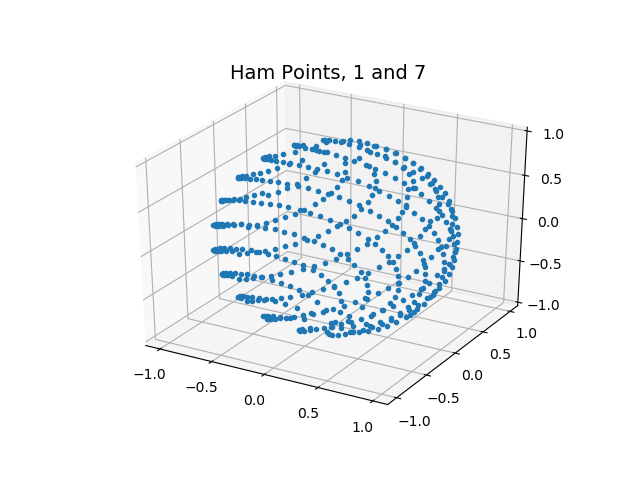

Note
Click here to download the full example code
Hammersley Sphere¶
Out:
C:\Users\ERIC\Documents\pygamma_gallery\docsource\sphinx\examples\hammersleypoints\plot_hamm_points_sphere.py:61: UserWarning: Matplotlib is currently using agg, which is a non-GUI backend, so cannot show the figure.
plt.show()
import numpy as np
from matplotlib import pyplot as plt
from mpl_toolkits.mplot3d import Axes3D
def return_point(m, n, p):
"""
m is the index number of the Hammersley point to calculate
n is the maximun number of points
p is the order of the Hammersley point, 1,2,3,4,... etc
l is the power of x to go out to and is hard coded to 10 in this example
:return type double
"""
if p == 1:
return m / float(n)
v = 0.0
for j in range(10, -1, -1):
num = m // p ** j
if num > 0:
m -= num * p ** j
v += num / (p ** (j + 1))
return (v)
if __name__ == "__main__":
npts = 500
h_1 = np.zeros(npts)
h_7 = np.zeros(npts)
for m in range(npts):
h_1[m] = return_point(m, npts, 1)
h_7[m] = return_point(m, npts, 7)
phirad = h_1 * 2.0 * np.pi
h7 = 2.0 * h_7 - 1.0 # map from [0,1] to [-1,1]
st = np.sqrt(1.0 - h7 * h7)
xxx = st * np.cos(phirad)
yyy = st * np.sin(phirad)
zzz = h7
fig = plt.figure()
ax = fig.gca(projection='3d')
ax.plot(xxx, yyy, zzz, '.')
ax.set_xticks([-1.0, -0.5, 0.0, 0.5, 1.0]);
ax.set_yticks([-1.0, -0.5, 0.0, 0.5, 1.0]);
ax.set_zticks([-1.0, -0.5, 0.0, 0.5, 1.0]);
ax.set_title("Ham Points, 1 and 7", fontsize=14)
plt.show()
Total running time of the script: ( 0 minutes 0.300 seconds)